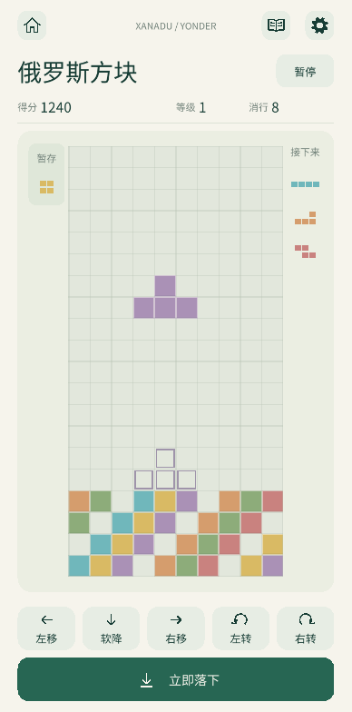
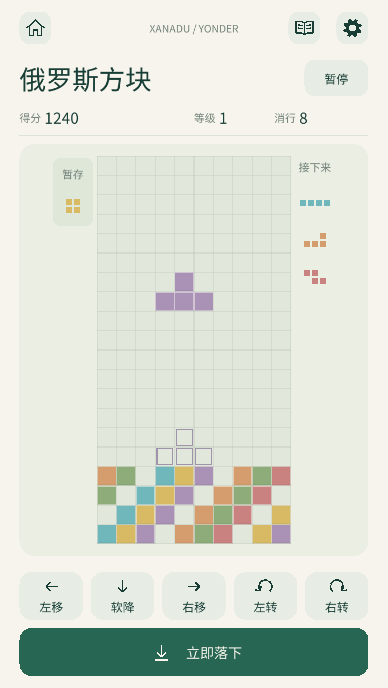

俄罗斯方块 · Unity UI 示例
独立竖屏 · 合并前截图纸色背景、深绿导航，完整棋盘与集中操作区。下方是生产 UGUI 的实际渲染图；展示局面用于验证，此页不运行游戏。图片保留合并前的第 14 张卡和原倒数字样；当前源码中俄罗斯方块为第 15 款，继续倒数显示“倒计时：3／2／1”。


安全区由 APP 宿主处理，图中不再叠加系统栏。棋盘分别为 237 × 474 和 194 × 388，始终保留 10 × 20 个正方格。截图及射线检查不代表真机触摸、声音与帧率验收。
验证记录 · 尺寸与来源 · 原始研究原型